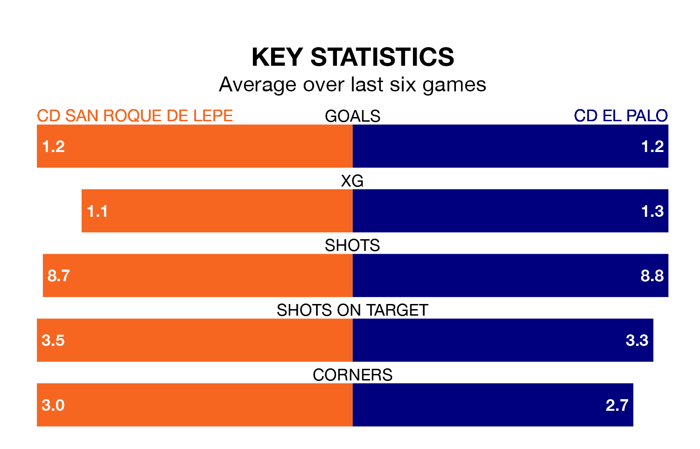

Struggling CD El Palo face CD San Roque de Lepe away at the Estadio Municipal Ciudad de Lepe on Sunday looking to build on a win in their last league outing.
After securing all three points with a 1-0 victory over Racing Cartagena MM on April 21, el Palo sit 16th in the Segunda División RFEF Group 4.
They travel to play a San Roque de Lepe side 14th in the standings, who lost in their last match, 2-0 against UCAM Murcia CF.
With 25 goals in 32 games so far this season, El Palo are scoring at below the league average rate with 0.8 goals per game. And they are conceding more than average, letting in 35 goals at a rate of 1.1 per game.
San Roque de Lepe, meanwhile, are average scorers, with 1.0 goal per game. They have conceded 1.1 goals per game.
The hosts are in mixed form in the Segunda División RFEF Group 4, with three wins and three losses from their last six games.
With three wins and three draws over that period, el Palo's form is better – they have taken 12 points from 18, compared to San Roque de Lepe's nine.
Updated: 07:59 (UTC), 26/04/24